| SOURCE | TITLE| IMAGE MATCH | click to source page |
| Dreamstime.com | Stamp Printed in Hungary Shows Awabi Fisher Women Editorial Stock Photo - Image of prints, aged: 184134353 | 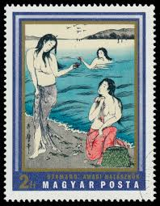 |
| Invaluable.com | Sold at Auction: Utamaro (1753), KITAGAWA UTAMARO (C. 1753 - 1806) | 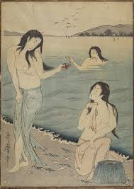 |
| Fuji Arts | Utamaro (1750 - 1806) Awabi Divers - Fuji Arts Japanese Prints | 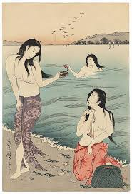 |
| Fuji Arts | Utamaro (1750 - 1806) Awabi Divers - Fuji Arts Japanese Prints | 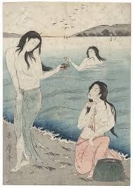 |
| MutualArt | Kitagawa Utamaro | interprétation d'après les pêcheuses d'awabi par ... | MutualArt | 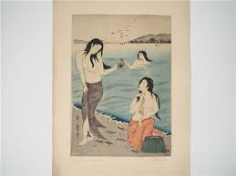 |
| eBay | HUNGARY EUROPE FULL SET MNH JAPANESE PAINTINGS STAMPS LOT (HUNG 184) | eBay | 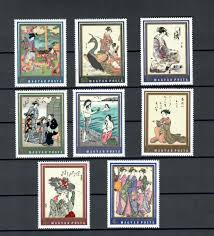 |
| Getty Images | 139 Japanese Pearl Diver Stock Photos, High-Res Pictures, and Images - Getty Images | Ama divers | 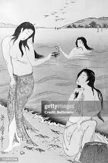 |
| Photos.com | Woodblock Print Of Japanese Female by Bettmann | 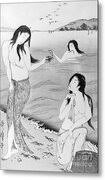 |
| Etsy | Vintage Japanese Diorama - Etsy Canada | 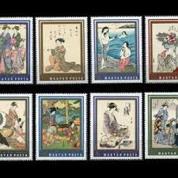 |
| Etsy | Fabulous Folk Tales 1965 Postage Stamps / Arabian Nights / Handmade Card Material, Collage Art Supply, Child Birthday Card Embellishment - Etsy | 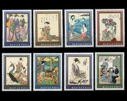 |
| Invaluable.com | Sold at Auction: Utamaro (1753), Kitagawa Utamaro Original "Diving for Abalone" | 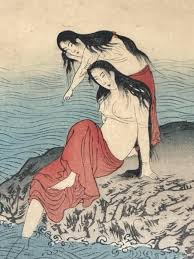 |
| PBS | Russian Archives Online > The Gallery > Oriental Art p.1 | 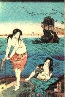 |
| eBay | The Geisha | eBay | 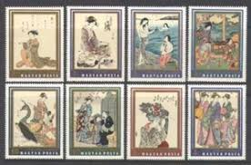 |
| Kasasagi Fine Arts | Antique Book of Japanese Bijin Beauties - Kasasagi Fine Arts | 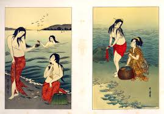 |
| Shutterstock | Ajman Circa 1971 Cancelled Postage Stamp Stock Photo 2665904931 | Shutterstock | 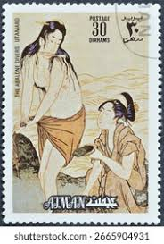 |
| AliExpress | Budapest hungary-AliExpress | 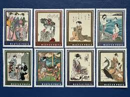 |
| HipStamp | Hungary Scott 2077-2084 (1971) Mint NH VF Complete Set C | Europe - Hungary, General Issue Stamp / HipStamp | 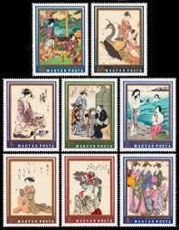 |
| Invaluable.com | Sold at Auction: Kuniyoshi, UTAGAWA KUNIYOSHI 歌川國芳 (1798 - 1861) | 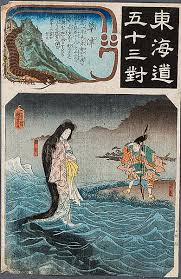 |
| Etsy | KaysVintageEphemera - Etsy Singapore | 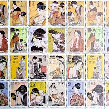 |
| LiveAuctioneers | Utamaro Kitagawa : Awabi Tori | 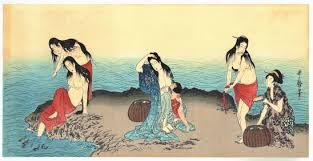 |
| Alchetron.com | Utamaro - Alchetron, The Free Social Encyclopedia | 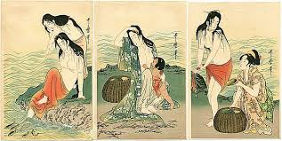 |
| Mystic Stamp Company | 2077-84 - 1971 Hungary - Mystic Stamp Company | 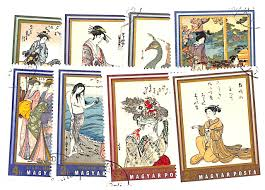 |
| LOT-ART | Triptych, Woodblock print (reprint), Published by Takamizawa Tadao - Kitagawa Utamaro (1753-1806) - "Awabitori" あわび取り (Abalone Divers) - 1973 (Showa 48) in Japan | 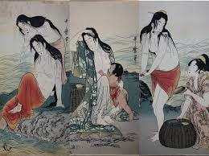 |
| Shogun's Gallery | Utamaro Giclee Woodblock Triptych Print Set of 3 "Abalone Divers" 7"x1 – Shogun's Gallery | 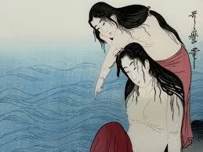 |
| eBay | Ajman 1971 Giappone Giapponese Dipinti Kitagawa Utamaro Arte Donna Nudo Perf | eBay | 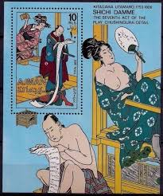 |
| eBay | HUNGARY 1971 JAPANESE PAINTINGS 2 SETS OF 8 STAMPS PERF. & IMPERF. MNH | eBay | 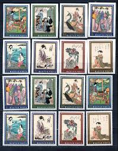 |
| rideventur.com | Vintage Kitagawa Utamar Reproduction “Awabitori Abalone Divers” Woodblock Print | 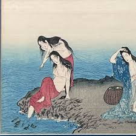 |
| What is the artist name of the print? | 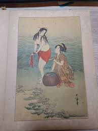 | |
| eBay | BL) HUNGARY 1971 JAPANESE PAINTINGS SETS OF 8 STAMPS | eBay | 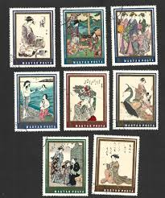 |
| eBay | Hungary 1971. Japan arts - paintings set MNH (**) Mi: 2673-2680 / 5 EUR | eBay | 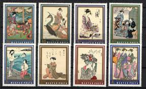 |
| Scholten Japanese Art | Scholten Japanese Art | Ukiyo-e Tales: Stories from the Floating World | Katsukawa Shunsen (Shunko II), Picnic at the Shore with Abalone Divers | 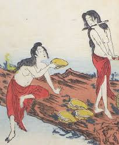 |
| Japanese Print Search and Database | Japanese Print "Abalone Divers" by Kitagawa Utamaro | 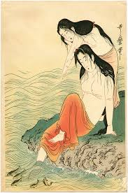 |
| eBay | Kitagawa Utamaro Poster, Title Unknown, Ukiyo-e Work, Masamitsu Gallery b568 | eBay | 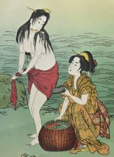 |
| DiscountMags.com | Tatler Hong Kong June 2021 (Digital) - DiscountMags.com (Australia) | 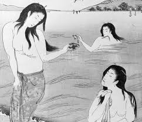 |
| eBay | 1970s Ajman Paintings Of Utamaro Uncut Sheet Of 16 T563 | eBay | 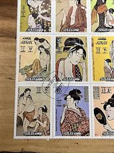 |
| heritage-print.com | Abalone Shell Art Prints, Posters & Puzzles | 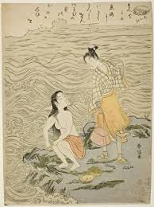 |
| eBay | JAPAN 1920'S BLOCK PRINT 14.25x 10.75 W/FRAME *PRE-OWNED | 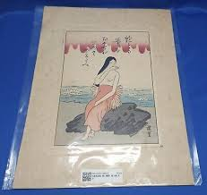 |
| eBay | Vintage RARE Enamel on Copper Triptych Painting Japanese Utamaro Abalone Divers | eBay | 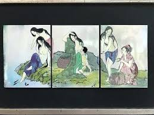 |
| eBay | Hungary Art Famous Japanise Paintings set 1971 | eBay | 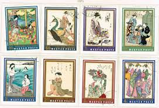 |
| postbeeld.com | Stamps with the theme East Asian Art - PostBeeld - Online Stamp Shop - Collecting | 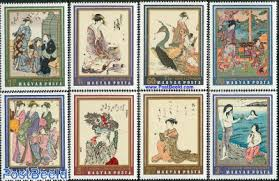 |
| eBay | 1971 Ajman State Paintings of Utamaro Stamps 16 , SS, Other Stamps 4 | eBay | 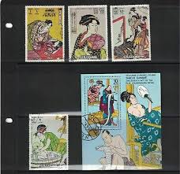 |
| Onimusha 2 paintings collection (can't screen with a better quality or find the original artist) : r/Onimusha | 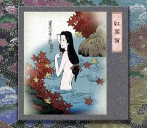 | |
| Gallery 1980 | Utamaro | Abalone Divers – Gallery 1980 | 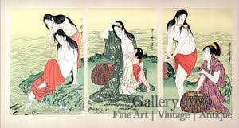 |
| Alamy | HUNGARY - CIRCA 1971: Set of stamps printed in Hungary shows the same inscription, series "Japanese Prints from Museum of East A Stock Photo - Alamy | 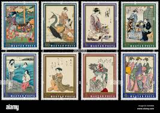 |
| eBay | JAPAN 1920'S BLOCK PRINT 14.25x 10.75 W/FRAME *PRE-OWNED* | eBay | 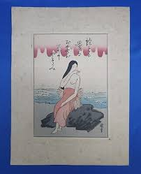 |
| Ukiyo-e Search | Japanese Print "Abalone Divers" by Torii Kiyohiro | 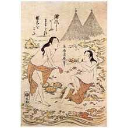 |
| LiveAuctioneers | Utamaro Kitagawa: Awabi Divers Woodblock Triptych | 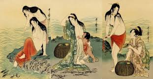 |
| Ukiyoe-Gallery | Ukiyo-e Gallery | 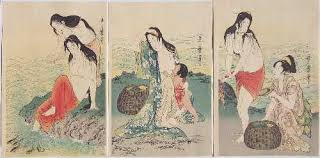 |
| Japan Experience | Ama: Japanese hand-crafted diving women | Japan Experience | 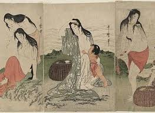 |
| Getty Images | 291 Atropos Stock Photos, High-Res Pictures, and Images - Getty Images | 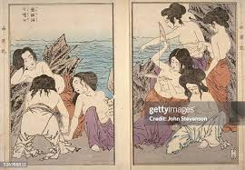 |
| Etsy | Four Boookmarks, Postage Stamps Collages, Japanese Woodcut Prints 18th Century on Vintage Stamps 1970s. Laminated. - Etsy | |
| pixels.com | Young Girl chasing Fireflies after A Bath p1 Greeting Card by Historic Illustrations | |
| Japan 1969 Stamp Week issued 20 April 1969 | ||
| brumstamp | Hungary 1971 Japanese Art/ Peacock/ Women/ Geisha/ Naked/ Painting/ Nudes 8v set n20907 | |
| MutualArt | Kitagawa Utamaro | Diving for Abalone | MutualArt | |
| MutualArt | Katsushika Hokusai | Ono no Takamura (19th Century) | MutualArt | |
| Wikipedia | Tawara Tōda Monogatari - Wikipedia | |
| eBay | Kitagawa Utamaro Chichi Damme / Japanese Art - CTO - Z12 | eBay | |
| Pinkoi | Japan Japanese traditional monster hunging scroll ubume Yokai Art Shop / OROCHIDO - Pinkoi |